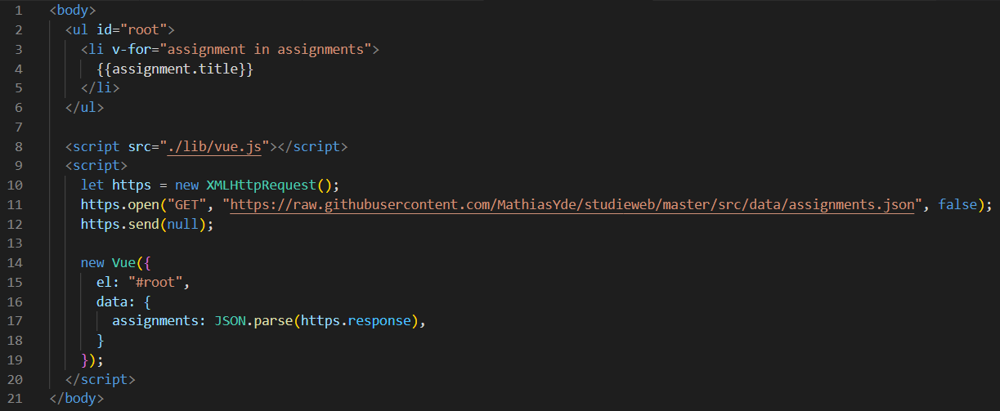
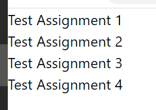
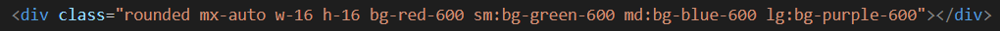
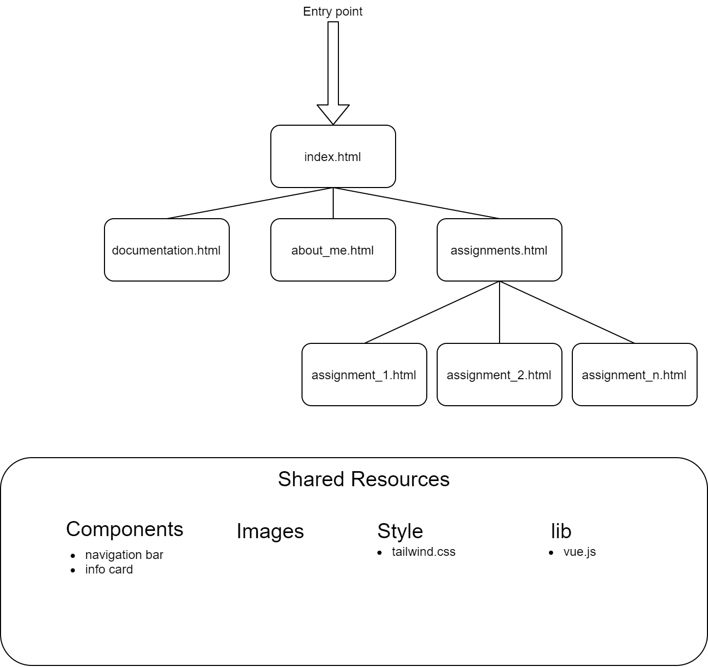

Jeg lavede denne studieweb site med motivationen at den skal være pæn og brugervenlig, samt velfunkerende og visse mine kompetencer med både design og kode.
For det, så har jeg brugt Vuejs og TailwindCSS
Vue er et framework til at hjælpe med at lave interaktive hjemmesider. For eksempel så kan vi hente noget data fra internettet og visse det på hjemmesiden
Dette stykke kode ville hente metadata omkring mine opgaver fra min GitHub og så vise alle opgavers titler (Se billede)
TailwindCSS er et CSS framework, der giver én de fundamentale byggeblokke til at lave en hjemmeside.
Frameworket kommer ikke med pre-made komponenter, så som knapper, navigationsbare osv. Det skal man lave selv
Tailwind's idelogi er at man styler et element med classes istedet for inline style. Det giver nogle foredele, for det første, så kan frameworket lave dynamiske forhold mellem elementer og at man kan bruge media queries.
Prøv at ændre på vinduets størrelse
Brikkens farve ændres ifølge med vinduets bredde, dette lades sig gøre med Tailwind's breakpoints.
Idéen er man spefificere en egenskab og så overskriver man den hvis vinduets bredde bliver til en bestemt mængde pixels
Jeg har valgt at bruge en simple, men stadig dynamisk filstruktur der lader mig organisere sider i tilsvarende mapper
Brugeren bliver præsenteret med en forside på index.html hvor der står lidt omkring mig og mit skoleværk. I navigation baren kan brugen navigere videre til andre sider.